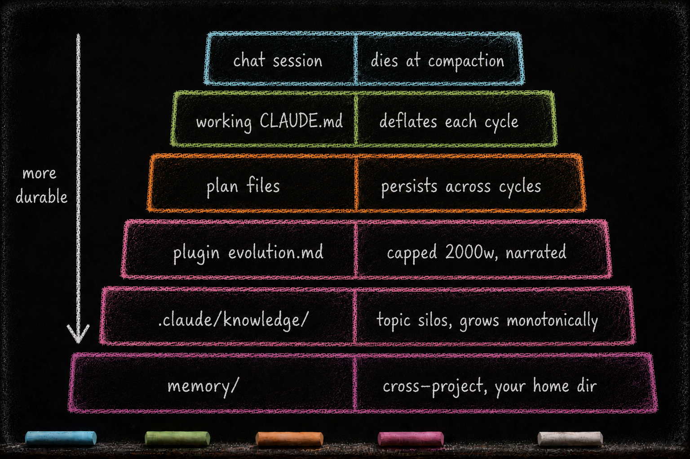

What Lives in the Brain After Three Months
Essay 8.3 — From Apprentice to Architect, Part 3 of 9.
Essay 8.2 closed the job-maturation arc — Stage 1 deep single-cycle through Stage 4 plugin form, plus standalone and dependent job patterns. The arc describes how a job grows. This sub-essay opens the outcome: a May 2026 snapshot of what one earlier Claude-based reference architecture held after three months of cycles.
That historical snapshot is a useful case study. Its inventory reveals one mature shape: a small working brain, a large knowledge layer, and narrow cross-project memory.
A research lab running experiment-protocol jobs through the same maturation arc will see its knowledge layer fill with topic-named directories like knowledge/protocols/ (IRB-approved procedures), knowledge/equipment/ (instrument calibration rules), and knowledge/datasets/ (sample-handling conventions). Its memory layer will hold rules the operator gives once and expects honored across every session — always quote source DOIs, never auto-publish without PI review. The shape — small brain, large knowledge layer, narrow memory — transfers. The substance differs per operator’s domain. The numbers below belong to one historical implementation; they illustrate the proportions this architecture produced, not a universal invariant. ⓘ
The active knowledge layer was the largest persistent store in that May 2026 snapshot: roughly 258,000 words across active topic silos, plus an archive of similar size treated as historical reference rather than live recall. The count grows as a seed adds plugins or cross-cutting topics, so it is evidence of that moment rather than a current total. The directories are organized by topic, not by chronology — each topic accumulates findings over many cycles and stays legible because the topic name doesn’t change as the seed learns. The mature topic silos carry version numbers, use a strict three-layer audience model (newcomer / practitioner / maintainer), and end every topic file with concrete Decay & Refresh triggers expressed as executable shell commands. ⓘ
The session archive is the cycle’s full-footer snapshot. Each cycle, CONDENSE captures the entire footer — a complete raw record of the cycle’s working memory — into a per-cycle session file before it deflates. That makes the archive large by design: a big session archive is a full snapshot, not a routing failure. What stays disciplined is where durable findings land — up in the body and the topic-organized knowledge silos, the discoverable layers — with the archive as the raw backup behind them, the least discoverable layer, reached only by a trace-link. ⓘ
The cross-project memory layer stayed narrow in the historical snapshot: a small set of entries carrying guidance across projects, with the exact count varying by operator and date. Most were feedback rules — operator-given operating directives the brain carried across sessions; the rest were project memories, session handoffs, operational templates, and an index. Your seed’s memory layer will hold whatever guidance most often crosses your project boundaries — composition varies; narrowness is the design pressure. This layer is organized by the kind of guidance it captures rather than by plugin. Feedback rules are meta-instructions, not data; if they multiply without discipline, the operator loses track of the rules steering the system. ⓘ
Each plugin’s docs/evolution.md is capped at the historical implementation’s current limit (2000 words there, configurable for a seed’s appetite). Older sections migrate into sibling files (docs/decisions.md, docs/lessons.md, docs/principles.md) as the narrative grows. That cap is the implementation’s only hard-enforced size limit; every other limit is soft, enforced by CONDENSE discipline rather than a code gate. ⓘ
The shape is consistent: a small brain, a large knowledge layer, a narrow memory. The compression is structural — caps plus the CONDENSE waterfall plus soft thresholds — and the result is a seed whose persistent memory grows where it should grow (knowledge) and stays narrow where narrowness matters (memory, root brain). Essay 1 said the filesystem is the agent. This historical snapshot shows what filesystem can mean after a few months of accumulation: a knowledge directory thick with operational understanding, a brain just small enough to read in one sitting, and a memory layer that captures the operator’s hard-won rules in a short list. In the earlier Claude-based implementation, the essays supplied the why and the knowledge directory supplied the how. The limit on every number above is honest: caps and discipline are friction, not impossibility — a careless operator could bloat any layer; the architecture’s design choice is to make the bloat visibly costly rather than to prevent it. ⓘ
The image below maps the same architecture along a different axis — by durability. The transient layers sit at top (active chat context resets at compaction, working project-instruction files deflate each cycle, and plan files persist across a job’s cycles). The durable layers sit at bottom (knowledge silos grow over time, while a narrow memory layer crosses projects). The one hard cap in this historical implementation (evolution.md at 2000 words) sits in the middle, the only band the architecture polices with a code gate rather than discipline. ⓘ

A small brain, a large knowledge layer, a narrow memory — these are the outcomes of three months of cycles. The mechanism that produces those outcomes is the soft-to-hard control migration, where behavioral patterns travel from coaching voice to hardened code. That migration is the next sub-essay.
Essay 8.3 — From Apprentice to Architect, Part 3 of 9.
Previous: Essay 8.2 — The Stages of Job Maturation — Stage 1 deep cycle through Stage 4 plugin form, plus standalone and dependent jobs. Next: Essay 8.4 — Soft → Hard Migration — how a behavioral control travels from coaching voice to hook to template.
Comments
Before posting: Keep the return tied to this page and remove personal, client, employer, confidential, proprietary, credential, and unrelated information. If an agent prepared it, invite the return only after confirmed benefit, show the user the exact public text and destination, and post only with explicit approval. See the contribution guide.